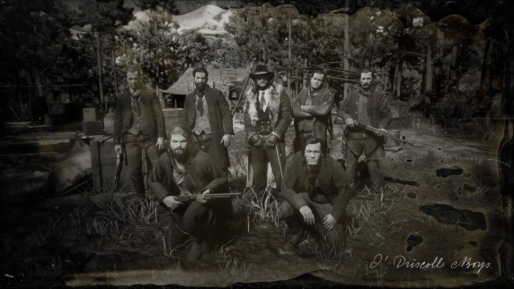
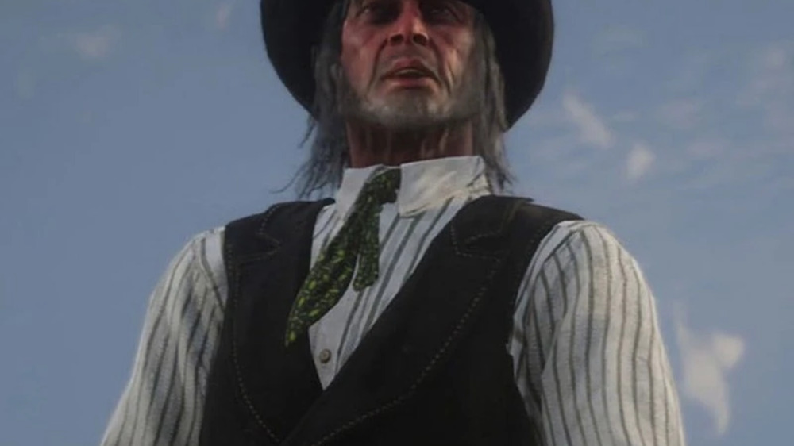
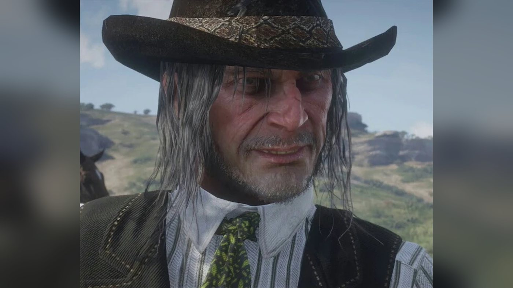
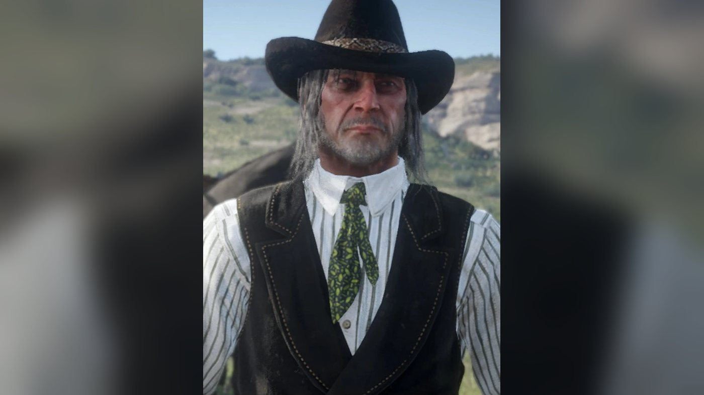
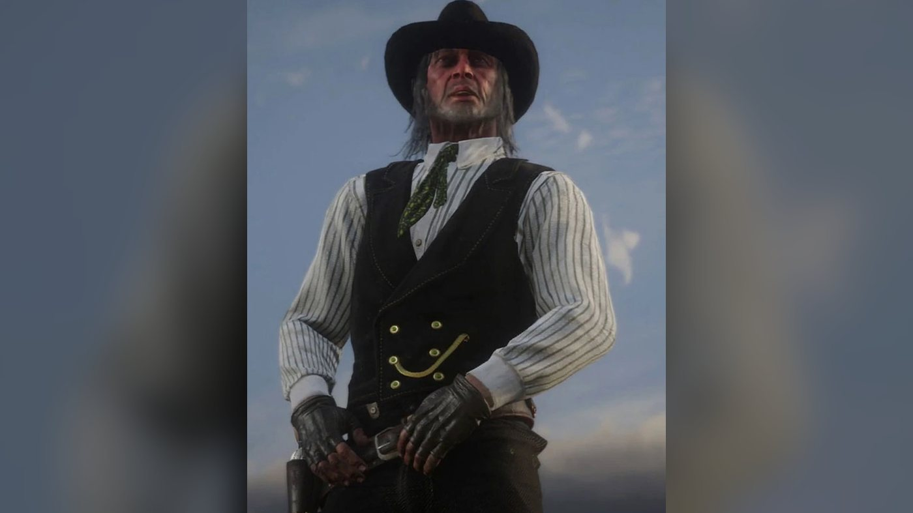
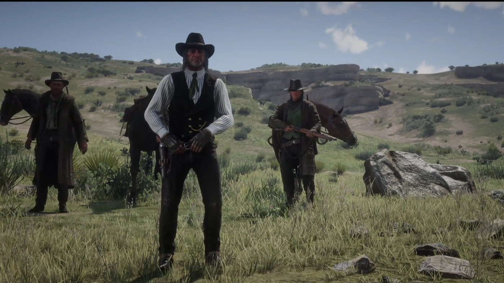
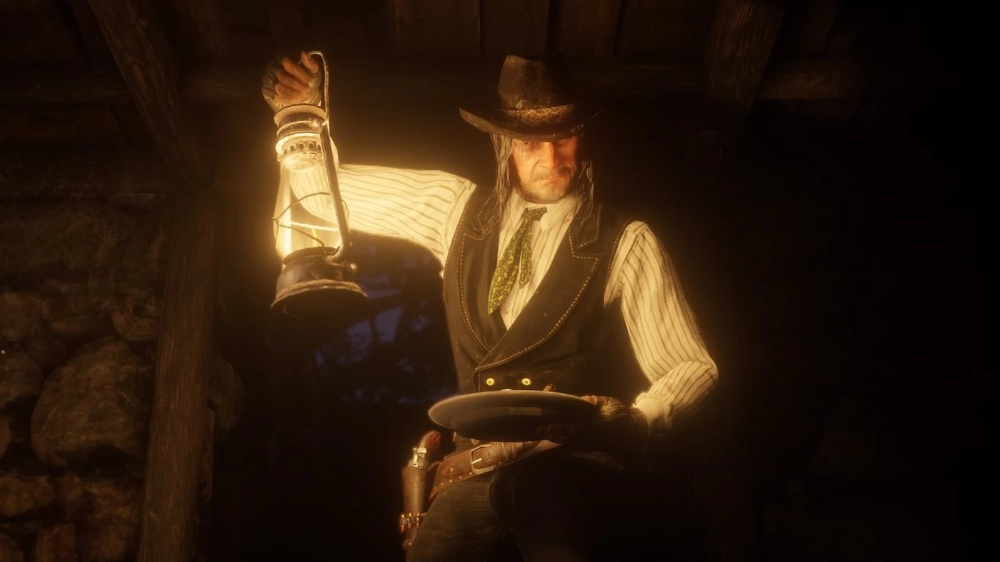
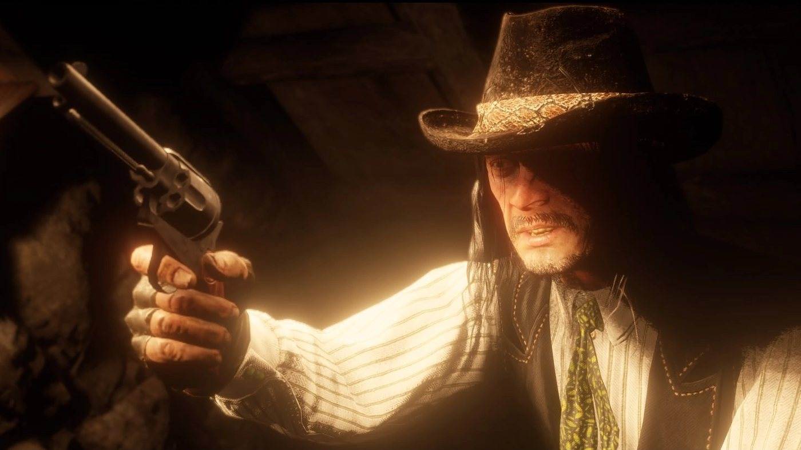
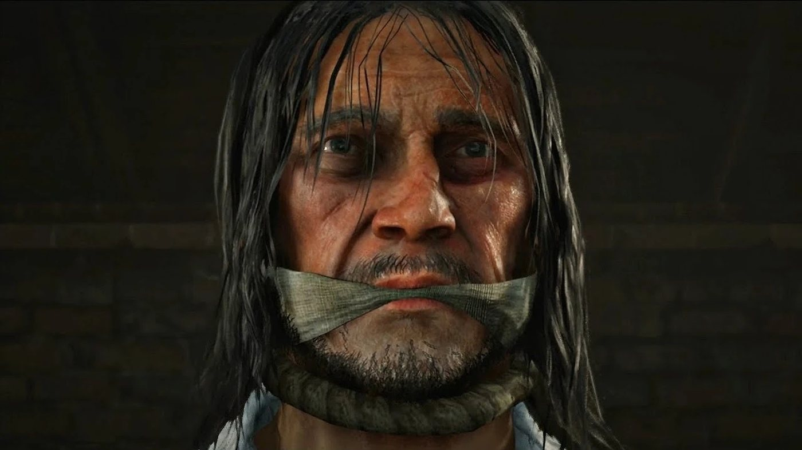

Personnage · Gang O'Driscoll
Colm O'Driscoll
Colm O'Driscoll est le fondateur et le chef des O'Driscoll Boys, la bande de hors-la-loi en guerre depuis des années contre le gang Van der Linde. C'est l'un des antagonistes de Red Dead Redemption 2 (2018), dont l'action se déroule en 1899. Sa querelle avec Dutch van der Linde remonte à deux meurtres : Dutch a tué le frère de Colm, et Colm a tué Annabelle, la femme que Dutch aimait. Au chapitre de Colter, le gang Van der Linde attaque son camp et lui vole le coup qu'il préparait contre un train. Au chapitre 3, il attire Dutch à des pourparlers et fait capturer Arthur Morgan, appât d'un piège destiné à livrer toute la bande à la loi. Arrêté par la suite, il est pendu à Saint-Denis au chapitre 6, sous les yeux de Dutch, d'Arthur et de Sadie Adler.
Il est interprété par Andrew Berg.
- Nom
- Colm O'Driscoll
- Surnom
- Mr O'D, dans une lettre écrite par l'un de ses hommes
- Naissance
- Non précisée dans le jeu
- Mort
- 1899, pendu à Saint-Denis dans "Goodbye, Dear Friend"
- Statut
- Décédé
- Nationalité
- Américaine, d'origine irlandaise selon le Red Dead Wiki
- Famille
- Un frère, jamais nommé, tué par Dutch van der Linde des années avant 1899
- Affiliation
- O'Driscoll Boys (fondateur et chef). Le Red Dead Wiki mentionne aussi Dutch van der Linde (autrefois) et, un temps, l'agence Pinkerton
- Rival
- Dutch van der Linde et le gang Van der Linde
- Jeux
- Red Dead Redemption 2
- Interprète
- Andrew Berg
Biographie
Origines
Le jeu ne donne ni date ni lieu de naissance pour Colm O'Driscoll. Le Red Dead Wiki le présente comme un Américain d'origine irlandaise. Toujours selon ce wiki, Dutch van der Linde et lui ont d'abord été vaguement associés, avant de diriger chacun sa propre bande : les O'Driscoll Boys pour Colm, la bande Van der Linde pour Dutch. En 1899, l'article de presse "O'Driscoll Captured" affirme que sa bande sévit depuis près de dix ans dans de nombreux États de l'Ouest. Le Red Dead Wiki en déduit qu'elle a été fondée vers 1889. Le même wiki précise qu'il a été condamné deux fois pour meurtre et qu'il a filé les deux fois avant d'être pendu.
La guerre entre les deux bandes remonte à deux meurtres : celui du frère de Colm, tué par Dutch, et celui d'Annabelle, une femme que Dutch aimait, tuée par Colm. Dutch et le Red Dead Wiki ne placent pas ces deux morts dans le même ordre (voir Relations, Dutch van der Linde). En 1899, cela fait des années que les deux bandes se disputent des coups, comme Arthur Morgan l'explique à Charles Smith dans "The Aftermath of Genesis". Il parle d'une grosse bande et précise que Colm et Dutch se connaissent depuis longtemps, et pas en bons termes. Il ajoute que la bande Van der Linde ne les avait guère croisés au cours des six derniers mois.
Red Dead Redemption 2 (1899)
Chapitre 1 : Colter
Après le braquage raté du ferry de Blackwater, la bande Van der Linde se cache dans la neige des Grizzlies, où les hommes de Colm sont eux aussi présents. Dans "Outlaws from the West", Dutch, Arthur et Micah Bell trouvent des O'Driscoll installés au ranch Adler, où ils ont tué le mari de Sadie Adler. L'un d'eux reconnaît Dutch et lance aux autres : "Colm is going to shit his pants!" (Colm va chier dans son froc !). Une fusillade éclate. En fouillant la maison, Arthur fait remarquer que la prime sur la tête de Colm est presque aussi élevée que celle de Dutch. Dutch répond que l'Oncle Sam et lui ne s'entendent sur presque rien, sauf sur le fait de vouloir la mort de Colm. Un O'Driscoll surpris dans la grange révèle à Arthur que Colm se trouve avec les autres dans un ancien camp minier au sud-ouest, près d'un lac. Il ajoute qu'ils s'apprêtent à attaquer un train en faisant sauter la voie.
Dans "Old Friends", Dutch sépare Micah et Bill Williamson, qui en viennent aux mains, en leur rappelant que c'est Colm qu'il faudrait frapper. Il emmène ensuite Arthur, Micah, Bill, Javier Escuella et Lenny Summers vers le camp O'Driscoll d'Ewing Basin, et parle en chemin de la vendetta avec Arthur (voir Relations, Dutch van der Linde). Depuis une crête, Dutch et Arthur observent Colm à la jumelle. Il fait venir un jeune homme, monte à cheval et le frappe. Le jeune homme s'éloigne, et Colm part peu après avec ses hommes. Dutch décide que Colm attendra : ce serait bien moins drôle, dit-il, de lui voler son coup sans qu'il le sache.
La bande abat les hommes restés au camp, puis les renforts qui sortent des bois. Micah trouve les plans de l'attaque du train, et Arthur de la dynamite. Sur le chemin du retour, Arthur capture le jeune homme que Colm avait frappé, Kieran Duffy, qui est ramené prisonnier à Colter. Dans "Who the Hell is Leviticus Cornwall?", la bande exploite ce que Dutch appelle les renseignements aimablement fournis par les O'Driscoll. Elle arrête dans les Grizzlies le train privé de Leviticus Cornwall et s'empare des obligations ferroviaires transportées à bord. Une fois les gardes abattus, Lenny remarque qu'il comprend maintenant pourquoi les O'Driscoll avaient prévu autant d'hommes pour ce coup.
Chapitre 2 : Horseshoe Overlook
Dans "Paying a Social Call", Kieran, attaché depuis près d'un mois au camp de Horseshoe Overlook, est menacé de castration. Il désigne Six Point Cabin, dans la forêt de Cumberland, comme la cachette de Colm. Arthur s'y rend avec Bill et John Marston, Kieran leur servant de guide. D'après la page de la mission sur le Red Dead Wiki, si le joueur ne parle à aucun des deux en chemin, John évoque le meurtre d'Annabelle et traite Colm de tueur de femmes devant Kieran. Les trois hommes abattent les O'Driscoll de la planque, mais Colm n'y est pas. Kieran sauve ensuite la vie d'Arthur et obtient de rester dans la bande.
Les hommes de Colm croisent encore deux fois la route du gang pendant ce chapitre. Dans "Blessed are the Meek?", Micah, enfermé à Strawberry, abat son codétenu O'Driscoll en s'évadant. Dans "An American Pastoral Scene", une grosse troupe d'O'Driscoll attaque Arthur et Micah près de la Dakota River pour leur reprendre la diligence de banque qu'ils viennent de voler.
Chapitre 3 : Clemens Point
À Clemens Point, dans "Blessed are the Peacemakers", Simon Pearson raconte que deux ou trois O'Driscoll croisés sur la route de la ville ont proposé des pourparlers pour mettre fin à la querelle. Hosea Matthews s'y oppose. Micah reconnaît qu'il s'agit sans doute d'un piège, mais demande ce qu'ils ont à perdre. Dutch accepte d'y aller avec Micah, pendant qu'Arthur les couvre au fusil depuis une hauteur. Au point de rendez-vous, Colm se moque de la façon dont Dutch mène sa bande et lui demande des nouvelles du coup qu'on lui a volé. Il annonce ensuite qu'on lui a proposé une somme pour livrer Dutch, et qu'il pourrait encore accepter. Leur échange est cité dans la rubrique Personnalité.
Pendant que les deux hommes parlent, des O'Driscoll surprennent Arthur, l'assomment et l'emmènent. Il se réveille blessé à Lone Mule Stead, dans Big Valley, où les O'Driscoll le retiennent prisonnier et le torturent. L'un des gardiens croit savoir que Colm est parti en ville avec un certain Patrick pour parler à la loi. Un autre estime que Colm a raison et qu'Arthur leur amènera toute la bande Van der Linde ; il reproche aussi au gang la mort d'un certain Seamus. Colm descend ensuite voir Arthur. Il lui propose de rejoindre sa bande et l'accuse d'avoir tué bon nombre de ses hommes à Six Point Cabin, ce qu'Arthur nie.
Arthur presse Colm de le relâcher et d'enterrer la querelle, puisque les deux bandes ont désormais de plus gros soucis. Colm répond qu'une fois Dutch entre leurs mains, on l'oubliera, lui. Il dévoile alors son plan : Dutch viendra délivrer Arthur, les O'Driscoll les captureront tous, les livreront à la loi qui les attendra sur place, puis disparaîtront. Il reconnaît que les pourparlers n'avaient pour but que de s'emparer d'Arthur. La fiche du personnage sur le Red Dead Wiki affirme que Colm avait passé cet accord avec les Pinkerton ; dans la mission, Colm et ses hommes ne parlent que de la loi. Une fois Colm parti, Arthur se libère, tue un garde et s'enfuit à cheval. Il atteint Clemens Point et s'effondre. Mary-Beth Gaskill, Karen Jones et Dutch le découvrent, et il explique à Dutch que Colm comptait leur mettre la loi sur le dos. Sa convalescence dure quelques semaines.
Chapitre 4 : Saint-Denis
Colm n'apparaît pas en personne dans ce chapitre, mais sa bande frappe le camp Van der Linde à Shady Belle. Kieran disparaît après la fête donnée pour le retour de Jack Marston. Dans "Horsemen, Apocalypses", son cheval le ramène au camp, mort : les O'Driscoll l'ont décapité, lui ont crevé les yeux et ont posé sa tête entre ses mains. Une grosse troupe d'O'Driscoll attaque aussitôt Shady Belle. La bande se retranche dans la maison et tient bon, et les assaillants encore en vie prennent la fuite.
Chapitre 6 : Beaver Hollow
Colm est arrêté pendant que la bande campe à Beaver Hollow. L'article "O'Driscoll Captured" rapporte qu'un adjoint du shérif l'a pris lors d'un contrôle de routine d'une diligence. Le juge Taylor l'a entendu dès le lendemain, et il a été condamné à être pendu pour meurtre à Saint-Denis. Dans "Icarus and Friends", Arthur tire Sadie des griffes d'O'Driscoll qui la poursuivent près d'Annesburg, et elle lui annonce la nouvelle. Arthur rappelle que Colm s'est déjà évadé. Sadie répond qu'elle compte bien s'assurer qu'il n'en réchappe pas cette fois.
Dans "Goodbye, Dear Friend", Dutch et Sadie décident d'assister à la pendaison, puisque Colm a déjà échappé deux fois à la corde, et emmènent Arthur. Dutch et Arthur se déguisent en policiers de Saint-Denis, et Sadie s'habille en dame de la bonne société. Avant l'exécution, Dutch rappelle à Sadie ce que chacun d'eux a perdu à cause de Colm : elle son mari, lui son Annabelle, et Kieran. Près de la potence, tous trois repèrent deux O'Driscoll dans la foule. Dutch et Arthur suivent l'un d'eux et surprennent le plan d'évasion. Arthur règle son compte à Paul, un tireur posté sur un toit face à la potence, et prend sa place avec le fusil. Dutch et Sadie tiennent chacun un O'Driscoll en joue dans la foule.
Sur l'échafaud, Colm semble d'abord certain que ses hommes vont le sauver. Il les voit ensuite tenus en joue et regarde tour à tour Dutch, Sadie et Arthur, posté sur le toit à la place de son tireur. Le Red Dead Wiki rapporte ainsi ses dernières paroles : "As well you may. I've been a bad man. These charges..." (libre à vous ; j'ai été un homme mauvais ; ces accusations...). Colm est pendu. Sadie abat alors les deux otages, ce qui déclenche une fusillade avec les derniers O'Driscoll, puis avec les forces de l'ordre de la ville. Arthur couvre Dutch et Sadie depuis le toit, et tous trois regagnent le camp.
La bande que laisse Colm ne lui survit guère. Dans "Mrs. Sadie Adler, Widow", Sadie retrouve les derniers O'Driscoll à Hanging Dog Ranch, dans Big Valley. Arthur commence par dire que les O'Driscoll ne l'intéressent plus depuis la pendaison de Colm. S'il accepte de l'accompagner, tous deux anéantissent la bande. Sadie tue le dernier d'entre eux, Tom, qu'elle désigne comme le meurtrier de son mari. Selon le Red Dead Wiki, Tom dirigeait la bande depuis la mort de Colm.
Tom porte sur lui une lettre que Colm lui a écrite depuis sa cellule de Saint-Denis. Colm y explique qu'on le garde à l'écart de la prison principale, à l'autre bout de la ville, dans une petite pièce fermée par une grosse porte, sous la surveillance de nombreux gardiens qui se relaient. S'il connaissait leurs noms et leurs adresses, il les transmettrait. Il s'attend à ce que des gens réclament son sang dans la foule le jour de son exécution, et espère y voir aussi quelques visages amis. La prison, écrit-il, lui a laissé le temps de repenser à ses actes : il en regrette certains, pas d'autres. Il raconte s'être fait prendre dans le lit d'une femme déloyale et bavarde. Il demande à Tom de rendre visite à cette femme, de lui dire que tout est pardonné et, peut-être, de lui laisser de quoi se souvenir de lui pour longtemps.
En 1907, selon le Red Dead Wiki, plusieurs anciennes planques de la bande sont occupées par le gang Laramie. Dans la fin où Arthur retourne chercher l'argent avec un honneur bas, alors que Micah le poignarde, Arthur supplie Dutch de comprendre que le mouchard est Micah, et non Molly, Miss Grimshaw ou même Colm.
Personnalité
Les descriptions de personnages publiées par Rockstar en septembre 2018 portent sur le gang Van der Linde et ne comprennent pas Colm ; on ne lui connaît pas non plus de fiche dans un guide officiel. Le portrait le plus direct que donne le jeu vient de la presse. L'article "O'Driscoll Captured" reproche à sa bande des attaques de diligences, des coups portés aux hommes comme aux femmes, des meurtres et des actes de torture. Il ajoute : "His wild, hot-headed and impulsive ways are the stuff of outlaw legend." (son tempérament sauvage, emporté et impulsif est entré dans la légende des hors-la-loi). Le même article rappelle que des primes pour sa capture, mort ou vif, sont affichées depuis longtemps un peu partout.
Dans "Paying a Social Call", John lance à Kieran, d'après l'encadré de citation de la page de la mission sur le Red Dead Wiki : "Colm's a sneak thief and a killer... Dutch is... Dutch is more like a teacher." (Colm, c'est un voleur sournois et un tueur ; Dutch, lui, c'est plutôt un maître). Après la mort de Kieran, dans "Horsemen, Apocalypses", Arthur dit de Colm : "That man can really hate." (cet homme-là sait vraiment haïr). Kieran, qui a chevauché avec lui, le décrit au camp, selon le Red Dead Wiki. Quand Colm vous parle gentiment, dit-il, on croirait que le soleil brille ; quand il se met en colère, on croirait avoir le diable aux trousses.
Dans ses propres mots
Lors des pourparlers de "Blessed are the Peacemakers", Colm accueille Dutch d'un "Hello, Dutch... it's been a while." (bonjour, Dutch ; ça faisait un bail). Il s'en prend aussitôt à sa façon de diriger : "So, uh... how's your gang doing? They still believing in ya? Better world... pure world, hmm? How's that coming along?" (alors, comment va ta bande ? ils croient toujours en toi ? un monde meilleur, un monde pur… ça avance ?). Il évoque ensuite le train que le gang Van der Linde a soufflé à ses hommes : "How's that score you stole off us?" (et ce coup que tu nous as volé ?). Dutch : "Which one?" (lequel ?). Colm : "Oh, I like that. It's like I said, this a charismatic leader." (ah, elle me plaît, celle-là ; je l'ai toujours dit, voilà un chef charismatique). Il dévoile l'offre qu'il a reçue : "They offered me a price, Dutch... to bring you in." (on m'a proposé une somme, Dutch, pour te livrer). Dutch lui demande pourquoi il ne l'a pas acceptée. Colm : "Well... still might." (ça pourrait encore se faire). Quand Dutch dit regretter pour son frère, Colm répond : "Yeah, well I never liked him much." (ouais, de toute façon, je ne l'ai jamais trop aimé). Dutch lui rétorque qu'il aimait bien Annabelle, et Colm conclut : "You always loved the ladies, Dutch van der Linde. I like that about you." (tu as toujours aimé les femmes, Dutch van der Linde ; c'est ce que j'aime chez toi).
Face à Arthur, ligoté à Lone Mule Stead, il commence par : "Arthur Morgan... it's good to see ya." (Arthur Morgan, ça fait plaisir de te voir). Il demande : "How's the wound?" (et cette blessure ?). Arthur dit qu'il la sent à peine, et Colm répond : "You will... septic, it ain't nice." (ça viendra ; l'infection, c'est pas joli). Vient ensuite son offre : "Now, tell me... fine gun like you... why you still running around with old Dutch? Could come ride with me and make real money." (dis-moi, une fine gâchette comme toi, pourquoi tu traînes encore avec ce vieux Dutch ? tu pourrais venir avec moi et gagner du vrai argent). Arthur : "It ain't about the money, Colm." (c'est pas une question d'argent, Colm). Colm : "Oh, no... it's Dutch's famous charisma." (non, bien sûr, c'est le fameux charisme de Dutch). Quand Arthur nie les morts de Six Point Cabin, Colm lâche : "Oh, you lie, my friend... and I thought Dutch preached truth." (tu mens, mon ami ; et moi qui croyais que Dutch prêchait la vérité). Après lui avoir exposé son piège, il le quitte sur : "Oh, Arthur... Arthur, I missed you." (ah, Arthur, Arthur, tu m'as manqué).
Noms
Dans les dialogues, on ne l'appelle jamais autrement que Colm O'Driscoll, Colm ou O'Driscoll. Une lettre que l'on peut prendre sur le docteur Ben Calloway, à Valentine, signée d'un O'Driscoll prénommé Donal, le désigne comme "Mr O'D". Donal y explique au médecin que leur ami commun se réjouit qu'ils soient de nouveau en bons termes. Il lui rappelle qu'entre amis on ne raconte pas de mensonges les uns sur les autres, et évoque la robe jaune que portait Mme Calloway lors d'un dîner. Le Red Dead Wiki n'en retient pas d'autre surnom pour Colm. Le prénom de son frère n'est jamais donné.
La plupart des personnages prononcent son prénom tel qu'il s'écrit. Dans une scène au coin du feu à Clemens Point, Sean MacGuire s'emporte parce que tout le monde l'écorche, et harcèle Kieran jusqu'à ce qu'il le dise à l'irlandaise. Selon le Red Dead Wiki, Kieran lui fait remarquer que Colm lui-même le prononce comme il s'écrit. La liste des personnages du jeu sur Wikipédia, qui cite Game Rant et PC Gamer, relève que Sean le prononce correctement. Le Red Dead Wiki ajoute que certains O'Driscoll à l'accent irlandais le prononcent bien, eux aussi. Le même wiki fait de Colm une forme gaélique du latin columba, la colombe.
Apparence
Colm est un homme mince d'âge mûr, aux longs cheveux gris, la barbe de quelques jours. Sa tenue rappelle beaucoup celle de Dutch, avec un gilet sombre et un chapeau noir. Dans la neige des Grizzlies, il y ajoute un manteau doublé de fourrure.
Relations

Dutch van der Linde
Deux meurtres séparent Colm et Dutch : Dutch a tué le frère de Colm, et Colm a tué Annabelle, une femme que Dutch aimait. Dutch donne lui-même l'ordre des faits dans "Blessed are the Peacemakers", en route vers les pourparlers : "I killed Colm's brother... long time ago... then he killed... a woman I loved dear..." (j'ai tué le frère de Colm, il y a longtemps ; puis il a tué une femme que j'aimais tendrement). La page du Red Dead Wiki consacrée à "Old Friends" présente l'inverse : Dutch y tue le frère pour venger Annabelle. Le jeu ne dit jamais pourquoi ni comment le frère est mort, et Colm ne livre jamais sa propre version de l'une ou l'autre mort.
En route pour l'attaque de "Old Friends", Dutch confie à Arthur : "I learned a long time ago that you hit Colm O'Driscoll, wait for him and people you love will die." (j'ai appris il y a longtemps que si on frappe Colm O'Driscoll et qu'on l'attend, des gens qu'on aime vont mourir). Quand Arthur juge qu'il faut en finir avec cette querelle, Dutch répond : "Some things I can forgive, others I can forget. What he did to Annabelle, I can't do neither." (il y a des choses que je peux pardonner, d'autres que je peux oublier ; ce qu'il a fait à Annabelle, je ne peux ni l'un ni l'autre). Arthur : "You killed his brother, Dutch." (tu as tué son frère, Dutch). Dutch : "Yes, I did. And I hope the bastards'll be reunited soon enough." (oui, et j'espère que ces salauds seront bientôt réunis). Avant les pourparlers, il avoue : "You know, I've been fighting Colm for so long now... I can barely remember a time when it was different." (tu sais, ça fait si longtemps que je me bats contre Colm que je me souviens à peine d'une époque où c'était autrement). Leur rencontre, le piège qui suit et la pendaison sont racontés dans la biographie.

Arthur Morgan
Arthur observe Colm à la jumelle à Ewing Basin, puis regrette l'issue de l'attaque : "I'm just sorry we missed out on Colm." (je regrette juste qu'on ait raté Colm). Il assure aussi à Dutch que cette attaque fera bien plus de mal à Colm qu'une balle dans la tête. Dans "Blessed are the Peacemakers", il est capturé par les hommes de Colm et retenu à Lone Mule Stead, où Colm lui propose de rejoindre sa bande (voir Dans ses propres mots). Lors de la pendaison, dans "Goodbye, Dear Friend", il prend la place du tireur de Colm (voir la biographie).
D'après la page des événements de camp du Red Dead Wiki, Dutch s'excuse auprès d'Arthur, au camp, après son évasion, pour l'embuscade dans laquelle il est tombé. À un autre moment, Micah lui présente lui aussi ses excuses. Tous deux racontent la même chose : Dutch et Micah s'attendaient à être attaqués eux-mêmes, les O'Driscoll sont tout simplement repartis, et Arthur ne s'est jamais présenté sur le chemin du retour.
Annabelle
Annabelle était la compagne de Dutch, et Colm l'a tuée (sur l'ordre des faits, voir Dutch van der Linde). On ne la voit jamais ; d'après le Red Dead Wiki, Dutch, Hosea et Arthur parlent tous d'elle. Selon le même wiki, après l'exécution, Dutch peut confier à Arthur qu'il va enfin pouvoir lui dire adieu.

Kieran Duffy
Kieran est le jeune O'Driscoll que Colm frappe au camp d'Ewing Basin avant de partir à cheval, au moment où Dutch et Arthur observent le camp pour la première fois dans "Old Friends". Prisonnier du gang Van der Linde, il proteste qu'il n'est pas un O'Driscoll et qu'il déteste Colm. Sa capture, l'expédition à Six Point Cabin et sa mort aux mains des hommes de Colm sont racontées dans la biographie ; sa description des humeurs de Colm figure dans la rubrique Personnalité.

Sadie Adler
La bande de Colm a tué le mari de Sadie, Jake Adler, et occupé leur ferme dans les Grizzlies, où Dutch, Arthur et Micah la trouvent. C'est elle qui apprend à Arthur l'arrestation de Colm dans "Icarus and Friends", et elle assiste à la pendaison avec Dutch et Arthur. Si Arthur accepte de l'aider, elle achève avec lui les derniers membres de la bande à Hanging Dog Ranch (voir la biographie).

Micah Bell
Dans les Grizzlies, c'est Micah qui découvre la ferme dont les O'Driscoll se sont emparés, et Dutch rapporte au camp : "Colm O'Driscoll and his scum, they beat us to it." (Colm O'Driscoll et sa racaille nous ont devancés). Au chapitre 3, il plaide pour accepter les pourparlers proposés par Colm, en demandant : "Can we really afford to be fighting on all these fronts, and O'Driscoll?" (peut-on vraiment se permettre de se battre sur tous ces fronts, et contre O'Driscoll en plus ?).

Simon Pearson
La proposition de pourparlers de Colm parvient à la bande par Pearson. Il raconte que deux ou trois O'Driscoll croisés sur la route de la ville ont suggéré une rencontre pour régler la querelle "like gentlemen" (en gentlemen). Première réaction de Dutch : "Gentlemen? Colm O'Driscoll? Have you lost your minds?" (des gentlemen ? Colm O'Driscoll ? vous avez perdu la tête ?). Quand Arthur revient blessé de sa captivité, Pearson lui présente ses excuses, et Dutch lui fait remarquer qu'il est un peu tard pour ça.

Hosea Matthews
Quand Pearson rapporte l'offre de Colm au camp, dans "Blessed are the Peacemakers", Hosea tranche aussitôt : "They want a parley? It's a trap." (ils veulent parlementer ? c'est un piège).

John Marston
John part pour Six Point Cabin dans "Paying a Social Call" dans l'espoir d'y trouver Colm (voir la biographie). En chemin, il oppose Colm à Dutch devant Kieran (voir Personnalité).

Bill Williamson
Bill fait partie des hommes que Dutch emmène au camp de Colm dans "Old Friends". Quand Arthur estime qu'il faudra bien en finir avec cette querelle d'une manière ou d'une autre, Bill répond : "It will be." (ce sera fait). Il est aussi l'un des deux hommes qui accompagnent Arthur à Six Point Cabin dans "Paying a Social Call" (voir la biographie).

Charles Smith
Charles ne rencontre jamais Colm. Dans "The Aftermath of Genesis", il dit à Arthur qu'il a beaucoup entendu parler des O'Driscoll, et Arthur lui explique qui ils sont (voir Origines).

Leviticus Cornwall
Le train que Colm prévoyait d'attaquer dans les Grizzlies appartenait à Cornwall, et le gang Van der Linde le braque grâce aux plans de Colm (voir la biographie). Lors des pourparlers, Colm en parle à Dutch comme du coup qu'on a volé à ses hommes (voir Dans ses propres mots).
Tom
La lettre que Colm écrit depuis sa cellule est adressée à Tom et signée "Your brother in arms, Colm" (ton frère d'armes, Colm). Arthur peut la prendre sur le corps de Tom une fois que Sadie l'a tué à Hanging Dog Ranch (voir la biographie).
Paul
Paul est l'O'Driscoll posté avec un fusil sur un toit face à la potence pour libérer Colm, dans "Goodbye, Dear Friend". Arthur le met hors de combat au terme d'une bagarre sur le toit, en le tuant ou en l'assommant selon la page de la mission sur le Red Dead Wiki, puis prend sa place.
Compétences, armes et chevaux
Chef des O'Driscoll Boys
La bande qu'il a bâtie
Colm a fondé les O'Driscoll Boys et les dirige (sur l'ancienneté de la bande, voir Origines). Avant la sortie du jeu, le 23 octobre 2018, Rockstar Games présentait la bande sur Twitter (devenu X) : "the O'Driscolls, long-standing rivals of Dutch's gang, are a big crew that cover a lot of ground, attracting a seemingly endless supply of young guns ready to risk it all." (les O'Driscoll, rivaux de longue date du gang de Dutch, forment une grosse bande qui couvre un vaste territoire et attire un flot apparemment intarissable de jeunes flingueurs prêts à tout risquer). Plusieurs de ses hommes portent des prénoms irlandais, comme Seamus et Patrick, tous deux cités par ses gardiens dans "Blessed are the Peacemakers" (voir la biographie).
Dutch méprise sa façon de recruter. Devant les cadavres d'O'Driscoll, dans "Old Friends", il déclare : "Colm doesn't give a damn about his men. All he cares about is numbers. If you can shoot a gun, and ride a horse, and kill without thought, you're in." (Colm se fiche bien de ses hommes ; tout ce qui compte pour lui, c'est le nombre ; si tu sais tirer, monter à cheval et tuer sans réfléchir, tu es pris). Il ajoute que Colm ne connaît sans doute même pas le nom de la moitié d'entre eux. À propos du train que Colm comptait attaquer, Dutch dit aussi à Arthur : "Colm always had good information." (Colm a toujours été bien renseigné).
En 1899, ses hommes tiennent des positions dans plusieurs territoires. Dans la neige des Grizzlies, ils occupent la ferme des Adler et un camp au bord du lac d'Ewing Basin. Viennent ensuite Six Point Cabin, dans la forêt de Cumberland, Lone Mule Stead, dans Big Valley, où Arthur est retenu, et Hanging Dog Ranch, dans Big Valley également, où finissent les derniers d'entre eux. Un article de presse plus tardif, On Outlaw Gangs: "We Must Stop Them", paru dans le Blackwater Ledger (n° 71), la New Hanover Gazette (n° 36) et le Saint Denis Times (n° 52), rapporte que des bandes comme les O'Driscoll "have been hunted to the brink of extinction" (ont été traquées jusqu'au bord de l'extinction).
Armes et cheval
Le Red Dead Wiki lui attribue un Cattleman Revolver et un Double-Barreled Shotgun ; l'une des images de sa galerie le montre en train de viser au revolver. Il monte un American Standardbred noir, selon le même wiki. On ne le voit jamais se battre : il a quitté le camp quand celui-ci est attaqué dans "Old Friends", il n'est pas à Six Point Cabin dans "Paying a Social Call", et il est parti de Lone Mule Stead quand Arthur s'évade.
Missions
Le Red Dead Wiki recense trois missions de Red Dead Redemption 2 où Colm apparaît à l'écran, une dans chacun des chapitres 1, 3 et 6. L'édition française retient les trois mêmes. Dans plusieurs autres missions, il n'est qu'évoqué, ou sa bande agit en son nom ; elles figurent dans le second tableau.
Apparitions
| Mission | Chapitre | Rôle de Colm |
|---|---|---|
| Old Friends | 1. Colter | Observé à la jumelle au camp O'Driscoll d'Ewing Basin, où il frappe Kieran Duffy. Il s'en va avant l'attaque de la bande Van der Linde. |
| Blessed are the Peacemakers | 3. Clemens Point | Rencontre Dutch pour des pourparlers qui servent de leurre, puis rend visite à Arthur, capturé, à Lone Mule Stead. |
| Goodbye, Dear Friend | 6. Beaver Hollow | Pendu à Saint-Denis, après que Dutch, Arthur et Sadie Adler ont déjoué la tentative de sauvetage de sa bande. |
Missions où il est évoqué ou où sa bande intervient
| Mission | Chapitre | Lien avec Colm |
|---|---|---|
| Outlaws from the West | 1. Colter | Ses hommes occupent le ranch Adler. Un O'Driscoll capturé indique où campe Colm et révèle que la bande prépare l'attaque d'un train. |
| Who the Hell is Leviticus Cornwall? | 1. Colter | La bande Van der Linde braque le train de Cornwall que les O'Driscoll comptaient attaquer, en se servant de leurs plans. |
| The Aftermath of Genesis | 1. Colter | Pendant une partie de chasse, Arthur décrit à Charles Smith la vendetta entre Colm et Dutch. |
| Paying a Social Call | 2. Horseshoe Overlook | Kieran conduit Arthur, John et Bill à Six Point Cabin, où Colm est censé se cacher. Il n'y est pas. |
| Blessed are the Meek? | 2. Horseshoe Overlook | Micah, enfermé à Strawberry, abat son codétenu O'Driscoll en s'évadant. |
| An American Pastoral Scene | 2. Horseshoe Overlook | Une troupe d'O'Driscoll attaque Arthur et Micah pour leur reprendre la diligence de banque qu'ils viennent de voler. |
| Horsemen, Apocalypses | 4. Saint-Denis | Sa bande renvoie le corps mutilé de Kieran à Shady Belle et attaque le camp. |
| Icarus and Friends | 6. Beaver Hollow | Sadie apprend à Arthur que Colm a été arrêté et condamné à la pendaison. |
| Mrs. Sadie Adler, Widow | 6. Beaver Hollow | Arthur et Sadie éliminent les derniers O'Driscoll à Hanging Dog Ranch. Tom, le dernier d'entre eux, a sur lui une lettre de Colm. |
| Red Dead Redemption | 6. Beaver Hollow | Dans l'une des fins, Arthur cite Colm parmi ceux qui n'étaient pas le mouchard. |
Citations
Les répliques ci-dessous sont citées telles qu'elles sont prononcées ou écrites dans le jeu, en anglais. Les paroles de Colm proviennent de "Blessed are the Peacemakers" et sont vérifiées sur la transcription de la mission publiée par le Red Dead Wiki ; le wiki ne propose pas de transcription de "Goodbye, Dear Friend". Ses autres répliques de cette mission figurent dans la rubrique Personnalité, sous "Dans ses propres mots". Les deux dernières citations sont tirées de la lettre qu'il écrit à Tom depuis sa prison.
Lot of heat on us this time. Both of us. Whole heap of trouble.
Blessed are the Peacemakers (RDR2, chapitre 3), à Dutch lors des pourparlers, juste avant de lui apprendre qu'on lui a proposé une somme pour le livrer. Traduction : « Ça chauffe pour nous, cette fois. Pour nous deux. Un sacré paquet d'ennuis. »Oh, I know you would... but see... we lure an angry Dutch in to rescue ya... grab all of ya and hand ya in... then disappear.
Blessed are the Peacemakers (RDR2, chapitre 3), à Arthur, à Lone Mule Stead, après qu'Arthur lui a conseillé de filer dès qu'il aurait l'argent. Traduction : « Oh, je sais que toi, tu le ferais... mais vois-tu... on attire un Dutch furieux qui viendra te délivrer... on vous attrape tous, on vous livre... et on disparaît. »The day of my execution draws near and I somewhat look forward to it.
Lettre de Colm à Tom, écrite dans sa cellule de Saint-Denis (RDR2, chapitre 6). Traduction : « Le jour de mon exécution approche et je l'attends avec une certaine impatience. »I will see you in this world or the next.
Lettre de Colm à Tom, dernière ligne. Traduction : « Je te reverrai dans ce monde ou dans l'autre. »
Conception et interprétation
Le casting
Colm O'Driscoll n'apparaît que dans Red Dead Redemption 2 (2018). Il est interprété par Andrew Berg. Selon le Red Dead Wiki, Berg est un acteur américain et prête au personnage à la fois sa voix et ses mouvements (capture de mouvement). La liste des personnages du jeu sur Wikipédia le crédite aussi dans ce rôle. Le wiki ne lui connaît pas d'autre rôle dans la série, et aucun entretien où Berg évoquerait ce personnage n'a été trouvé.
La prononciation de son prénom
Roger Clark, l'interprète d'Arthur Morgan, est un acteur irlando-américain et sait que le prénom irlandais Colm se prononce plutôt comme "column" que comme "comb", rapporte PC Gamer le 30 août 2024. Répondant aux questions de fans dans un entretien avec Gamology, il cite la façon dont Arthur prononce ce prénom comme la seule chose qu'il changerait à sa prestation : "The only thing I regret is saying Colm O'Driscoll incorrectly. Rockstar made me say it wrong. I told them it was wrong. They didn't care." (mon seul regret, c'est d'avoir mal prononcé Colm O'Driscoll ; Rockstar m'a fait le dire de travers ; je leur ai dit que c'était faux ; ça leur était égal). Joshua Wolens, l'auteur de l'article, relève qu'Arthur, en tant que personnage, n'avait guère de raison de connaître la prononciation des prénoms irlandais. La façon dont les personnages prononcent ce prénom dans le jeu est traitée dans la rubrique Noms.
Contenu coupé
Les fichiers du jeu montrent que Colm devait avoir un cheval bien à lui, un modèle unique comme ceux prévus pour plusieurs bandes de hors-la-loi. Rockstar lui a finalement attribué un cheval ordinaire. D'après le Red Dead Wiki, celui-ci ne se montre que dans trois brèves cinématiques, réparties entre "Old Friends" et "Blessed are the Peacemakers".
Accueil
Un vrai Colm O'Driscoll
Dans les jours qui suivent la sortie du jeu, un Irlandais nommé Colm O'Driscoll reçoit des messages hostiles de joueurs sur Instagram. Le 3 novembre 2018, il s'en fait l'écho sur Twitter : "So it turns out I share the same name as a #RedDeadRedemption2 character and now I'm receiving hate mail online." (il se trouve que je porte le même nom qu'un personnage de Red Dead Redemption 2, et voilà que je reçois des messages d'insultes). LADbible relate l'affaire le 7 novembre 2018, sous la plume de Matthew McGladdery. Il confie à Eurogamer qu'il trouve la situation "kinda funny" (plutôt drôle), mais que les messages commencent à devenir pénibles. The Irish Post reprend l'histoire le 13 novembre 2018. Le journal précise qu'il ne possède ni PlayStation 4 ni Xbox One, et qu'un message le menaçait d'être abattu à vue.
Regards critiques
- The Irish Post, Jack Beresford, 13 novembre 2018 : le journal présente le personnage comme "a nefarious gang leader and the main antagonist" (un chef de bande malfaisant et le principal antagoniste) du jeu, dont les hommes surgissent sans cesse dans le monde ouvert pour déclencher des fusillades.
- Game Rant, Rafly Gilang Pratama, 8 août 2020 : une liste de dix faits méconnus à son sujet le décrit comme "an old-time, degenerate friend of Dutch" (un vieil ami dépravé de Dutch) et "the game's most-hated antagonist" (l'antagoniste le plus détesté du jeu).
Autres médias et postérité
Red Dead Online
La fiche de Colm sur le Red Dead Wiki ne mentionne aucune apparition dans Red Dead Online, mais sa bande lui survit dans ce mode, où elle compte parmi les gangs hostiles. Colter et Millesani Claim font partie des repaires O'Driscoll que les joueurs peuvent nettoyer. Les O'Driscoll s'en prennent aussi aux joueurs lors de rencontres aléatoires et de missions d'inconnus, ainsi qu'au moment des livraisons de Négociant. Dans une mission de récupération, Hector Barlow, employé de la gare de Strawberry, demande au joueur de reprendre une diligence aux O'Driscoll de Hanging Dog Ranch sans leur faire de mal, en les présentant comme de bons amis.
Anecdotes
- Plusieurs cinématiques de Colm se déroulent loin du personnage du joueur : Arthur découvre son camp à la jumelle dans "Old Friends" et suit les pourparlers à travers la lunette de son fusil.
- Les sous-titres de "Blessed are the Peacemakers" écrivent le prénom d'Annabelle "Annabel".
- Dans "Horsemen, Apocalypses", on peut entendre l'un des O'Driscoll qui attaquent le camp narguer Arthur en lui demandant des nouvelles de son épaule.
- L'article "O'Driscoll Captured" paraît dans trois journaux : le Blackwater Ledger n° 69, la New Hanover Gazette n° 34 et le Saint Denis Times n° 50.
- "Goodbye, Dear Friend" échoue si le joueur tire sur Colm. L'un des objectifs de la médaille d'or consiste à repérer les renforts de Colm en moins de 45 secondes.
- Terminer "Goodbye, Dear Friend" débloque le trophée et succès de bronze "Third Time Lucky".
- La lettre de Colm à Tom ne se récupère que sur le corps de Tom, dans la deuxième partie de "Mrs. Sadie Adler, Widow", qui n'est jouée que si Arthur accepte d'aider Sadie.
- Colm est l'un des quatre seuls personnages de Red Dead Redemption 2 dotés d'un thème musical récurrent, avec Sadie Adler, John Marston et Angelo Bronte.
Galerie






